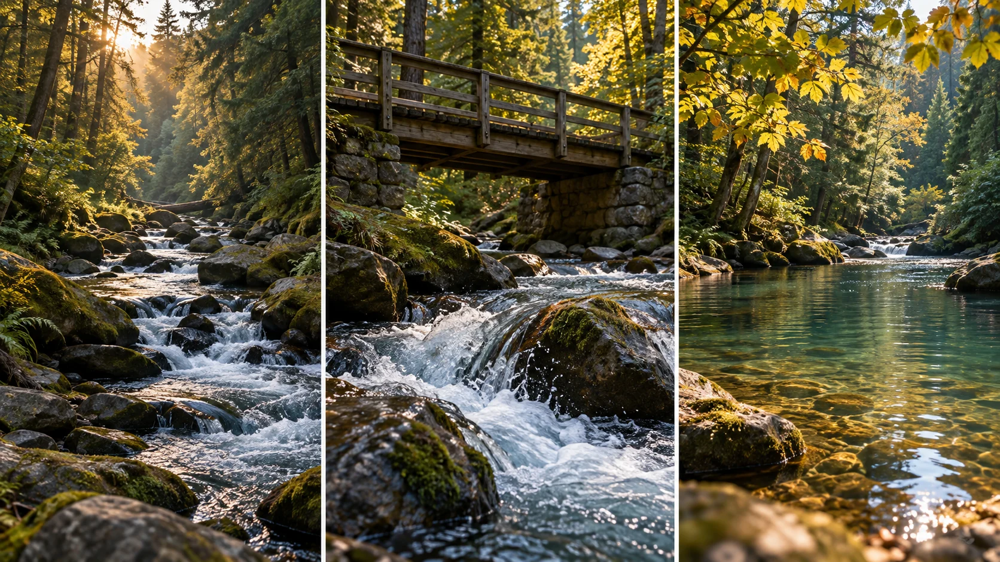

F34 · 중급 · FPV
현실감 있는 소리 만들기
환경·근접 사건·음악을 나누고 보이는 거리와 소리의 강조가 같은 공간을 설명하는지 판단한다.
그림에서 확인할 세 가지소리의 근거가 될 장면 속 사건을 찾는다
1숲과 물의 전체 환경
첫 화면의 넓은 개울과 나무를 본다. 특정 물보라보다 공간 전체를 느끼게 할 지속적인 환경을 생각하는 출발점이다.
2돌에 부딪치는 물
가운데 화면의 물보라와 다리는 가까운 사건의 근거가 된다. 화면에 보이는 거리 변화가 소리의 강조와 어떻게 연결될지 살핀다.
3잔잔한 물과 잎
마지막 화면의 물웅덩이와 움직이는 잎을 본다. 앞 장면의 강한 물소리와 같은 강조를 유지할지 환경의 변화를 기준으로 판단한다.
촬영 설계
촬영을 이렇게 설계한다
장면 속 소리 원인을 찾는다
학습 장면의 물과 바람, 발밑 구조물처럼 소리의 근거가 될 대상을 먼저 고른다. 카메라가 움직인다는 이유로 모든 구간에 같은 전환 효과음을 넣기보다 공간에서 무엇이 일어나는지 본다.
전체 환경과 사건을 나눈다
숲 전체를 느끼게 하는 환경음과 돌에 부딪치는 물의 가까운 사건을 별도 층으로 생각한다. 대상과의 거리가 바뀔 때 강조할 소리가 어떻게 달라져야 하는지 화면과 함께 비교한다.
음악과의 비중을 조정한다
음악만 있는 버전과 환경 소리가 추가된 버전을 비교한다. 보충 원문의 취지처럼 음량과 좌우 위치를 조정하되 효과음이 주목을 독점해 화면의 작은 사건을 과장하지 않는지 확인한다.
Parker Sheppard의 공식 소개는 자신의 FPV 영상에 현실감 있는 소리를 만드는 과정을 다룬다고 안내한다.
원본 영상Cinematic FPV Sound Design
1. 소리의 근거
들리는 소리가 화면 속 환경이나 사건과 어떻게 연결되는지 확인한다. 현실의 소리처럼 들린다는 이유만으로 현장 원음이라고 단정하지 않는다.
2. 거리와 강조
카메라가 대상에 접근하거나 멀어질 때 소리의 비중이 어떻게 달라지는지 듣는다. 일정한 음량이 공간의 변화를 지우는지 비교한다.
3. 음악과 사건의 균형
음악 때문에 작은 사건이 들리지 않거나 효과음이 화면보다 크게 느껴지는지 확인한다. 소리의 수보다 주의가 향하는 대상을 본다.
재생이 제한되면 원본 영상 새 창을 이용하세요.
제작진 설명 · 한국어 요약 번역
사운드 제작 영상의 공개 설명 범위
공식 소개
Parker Sheppard의 공식 영상 설명은 자신이 FPV 영상의 현실감 있는 사운드를 만드는 과정을 단계별로 소개한다고 안내한다.
미공개 세부
설명에는 Storyblocks와 Freesound가 자료 출처로 연결되어 있지만 실제 사용 레이어·믹싱 수치·효과음 타이밍은 공개 텍스트에서 확인되지 않는다.
보충 자료
이 교안의 구체적인 음향 적용은 별도 보충 본문과 학습 장면을 바탕으로 한다.
제작진 설명 · 한국어 요약 번역
환경음과 음악, 강조 효과의 역할을 나눈다
후반의 이유
Oscar Liang은 드론 소음 때문에 현장에서 깨끗한 환경음을 얻기 거의 불가능하다고 설명한다.
그래서 폴리 제작이나 음원 라이브러리로 후반에 소리를 더한다.
소리의 역할
환경음은 화면 속 바람·새·물에 맞추고 효과음은 화면 흐름을 돕는 데 쓴다.
무료 자료원으로 YouTube Audio Library와 Freesound를 소개한다.
믹싱과 범위
음량과 좌우 배치로 깊이를 만들되 강조 효과음은 겨우 들릴 정도로 둔다.
이는 Parker 영상의 실제 믹싱을 확인한 설명은 아니다.
Kling 프롬프트단문 인과 체인 · 16:9
내가 직접 만들어 본다
거리가 바뀔 때 숲 전체와 가까운 물보라와 잔잔한 물웅덩이 중 무엇이 앞에 서는지 화면의 강조 변화로 지시한다.
같은 인과를 FPV 시점의 속도, 근접 통과, 회전으로 표현한다.
- S01숲 속 개울이 바위 사이로 흐른다.
- S02영상은 하나의 연속 쇼트다.
- S03화면에 드론 기체는 나오지 않는다.
- S04처음 10초 동안 카메라는 높은 곳에서 개울과 나무를 넓게 본다.
- S05넓게 보이기 때문에 숲 전체가 하나의 공간으로 보인다.
- S06다음 10초 동안 카메라는 물이 부딪치는 바위로 다가간다.
- S07카메라가 가까워지자 물보라가 화면의 중심이 된다.
- S08물보라가 크게 보이기 때문에 가까운 사건이 앞에 선다.
- S09먼 나무는 작게 뒤로 물러난다.
- S10마지막 10초 동안 카메라는 잔잔한 물웅덩이로 옮겨 간다.
- S11웅덩이 물은 조용히 떠 있다.
- S12잎 하나만 물 위에서 천천히 움직인다.
- S13앞의 물보라가 사라졌기 때문에 장면의 강조도 작아진다.
[네거티브]
- 개울이 마른 길이나 도로로 바뀌는 것 금지
- 장면이 여러 컷으로 나뉘어 끊기는 것 금지
- 화면에 드론 기체가 나타나는 것 금지
- 처음부터 물보라만 크게 나오는 것 금지
- 개울과 나무가 한 장면에서 따로 노는 것 금지
- 카메라가 물에서 멀어져 숲으로 올라가는 것 금지
- 물보라가 중심에서 벗어나 가장자리에 머무는 것 금지
- 가까운 사건과 먼 숲이 같은 크기로 보이는 것 금지
- 먼 나무가 오히려 앞으로 크게 다가오는 것 금지
- 카메라가 같은 바위 곁에 계속 머무는 것 금지
- 웅덩이 물이 거칠게 튀거나 출렁이는 것 금지
- 잎이 한꺼번에 흩날려 소란해지는 것 금지
- 물보라가 웅덩이에서 다시 크게 일어나는 것 금지
- S01영상은 FPV 시점의 하나의 연속 쇼트다.
- S02화면에 드론 기체는 나오지 않는다.
- S03숲 속 개울이 바위 사이로 흐른다.
- S04처음 10초 동안 카메라는 나무 위에서 개울로 급강하한다.
- S05넓게 보이기 때문에 숲 전체가 하나의 공간으로 보인다.
- S06카메라는 나무 줄기 옆을 스치며 물가로 쏟아진다.
- S07목적지가 바위라서 카메라는 점점 속도를 높인다.
- S08다음 10초 동안 카메라는 물이 부딪치는 바위로 파고든다.
- S09카메라는 바위와 다리 기둥 사이의 틈을 통과한다.
- S10물보라가 화면 가득 번지며 가까운 사건이 앞에 선다.
- S11먼 나무는 작게 뒤로 물러난다.
- S12카메라가 옆으로 기울며 수면이 비스듬해진다.
- S13기울기가 커지자 숲이 발밑으로 오고 물이 머리 위로 뒤집힌다.
- S14한 바퀴를 돌아 수면이 다시 아래로 돌아온다.
- S15마지막 10초 동안 카메라는 급감속하며 웅덩이 위에 멈춘다.
- S16웅덩이 위에서 잎 하나만 천천히 움직인다.
- S17물보라가 사라졌기 때문에 장면의 강조도 작아진다.
[네거티브]
- 컷이 나뉘어 여러 쇼트로 끊기는 것 금지
- 화면에 드론 기체가 나타나는 것 금지
- 개울이 없는 마른 숲이 나오는 것 금지
- 카메라가 멀리서 내려다보기만 하는 것 금지
- 숲이 잘려 공간이 읽히지 않는 것 금지
- 줄기와 멀어 스치는 느낌이 없는 것 금지
- 속도가 일정해 가속이 안 느껴지는 것 금지
- 바위 앞에서 머뭇거리며 느려지는 것 금지
- 다리와 바위가 보이지 않는 것 금지
- 물보라가 작아 사건이 안 보이는 것 금지
- 먼 나무가 계속 크게 남는 것 금지
- 기울어도 수면이 비스듬해지지 않는 것 금지
- 뒤집힘 없이 기울기만 보이고 끝나는 것 금지
- 한 바퀴를 못 돌고 중간에 멈추는 것 금지
- 감속 없이 웅덩이를 지나쳐 버리는 것 금지
- 여러 잎이 한꺼번에 흔들리는 것 금지
- 웅덩이에서도 강한 강조가 이어지는 것 금지
결과에서 볼 것
- 넓은 장면에서 숲 전체의 공간이 먼저 읽혔는가
- 가까워지며 물보라가 가장 강한 사건으로 서 있었는가
- 웅덩이 장면에서 강조가 확실히 낮아졌는가
- 첫 동작부터 카메라가 빠르게 움직였는가
- 사람이나 물체 곁을 가까이 스치며 지나갔는가
- 회전과 급감속이 화면에 보였는가